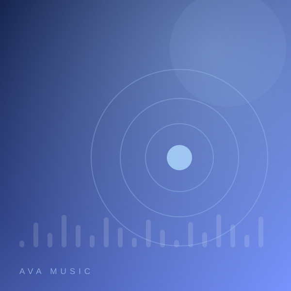

یوسف زمانیپاپ · ۲۴ آهنگ
♪ ۸۸.۲k پخش
یوسف زمانیپاپ · ۲۴ آهنگ
♪ ۸۸.۲k پخش
ARTISTS · هنرمندان آوا
خوانندگان و هنرمندان
پروفایل خوانندگان محبوب و تازهکار، همراه با آهنگها، آلبومها و آمار پخش. هنرمند موردعلاقهات را پیدا کن و دنبال کن.
۳۲خواننده فعال
۱۵آلبوم
۱۲۸آهنگ
یوسف زمانیپاپ · ۲۴ آهنگ
♪ ۸۸.۲k پخش
 آرمان رادپاپ · ۱۱ آهنگ
♪ ۴۵.۱k پخش
آرمان رادپاپ · ۱۱ آهنگ
♪ ۴۵.۱k پخش
 دیجی آریاریمیکس · ۱۸ آهنگ
♪ ۵۲.۶k پخش
دیجی آریاریمیکس · ۱۸ آهنگ
♪ ۵۲.۶k پخش
 سینا مرادیسنتی · ۱۲ آهنگ
♪ ۱۴.۲k پخش
سینا مرادیسنتی · ۱۲ آهنگ
♪ ۱۴.۲k پخش
 آوا کاویانیسنتی · ۸ آهنگ
♪ ۱۲.۵k پخش
کاوه رستمیراک · ۱۰ آهنگ
♪ ۹.۶k پخش
آریا مهرپاپ · ۱۳ آهنگ
♪ ۲۲.۹k پخش
آوا کاویانیسنتی · ۸ آهنگ
♪ ۱۲.۵k پخش
کاوه رستمیراک · ۱۰ آهنگ
♪ ۹.۶k پخش
آریا مهرپاپ · ۱۳ آهنگ
♪ ۲۲.۹k پخش

دیجی نویدریمیکس · ۱۵ آهنگ ♪ ۳۷.۳k پخشخوانندهای با این حرف پیدا نشدحرف دیگری را انتخاب کنید یا گزینه «همه» را بزنید.